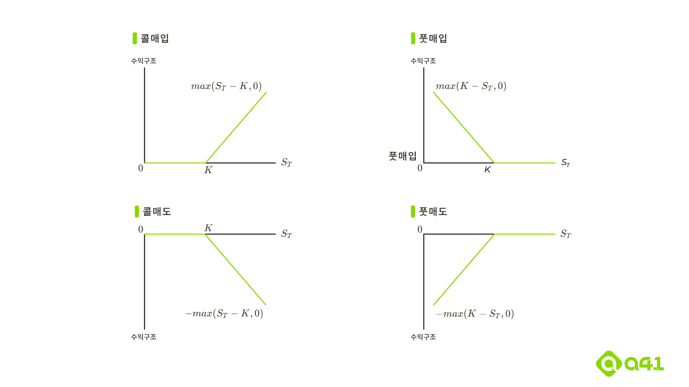

Chapter 10
옵션시장의 구조
Mechanics of Options Markets
10.1~3 Types, Positions, Underlying Assets of Options
옵션의 종류는 기본적으로 무엇인가를 “살” 권리 및 “팔” 권리로 나뉩니다.
기초자산을 살 권리를 콜옵션, 팔 권리를 풋옵션이라고 하며, 추가적으로 옵션의 권리행사를 만기일(Expiration date, Maturity date)에만 할 수 있는 옵션을 유럽형(European) 옵션, 만기일 이전에 옵션 매수자가 원하는 때에 언제나 권리행사를 할 수 있는 미국형(American) 옵션이라고 합니다.
옵션에 따른 권리는 옵션 매수자에게 있으며, 매도자는 매수자가 권리행사를 하고자 하는 경우 반드시 이에 응해야 합니다. 따라서 옵션 포지션은 총 4개로 구분됩니다.
- 콜옵션 매수, Long in Call, \(max(S_T-K,0)\)
- 풋옵션 매수, Long in Put, \(max(K-S_T,0)\)
- 콜옵션 매도, Short in Call, \(-max(S_T-K,0)\)
- 픗옵션 매도, Short in Put \(-max(K-S_T,0)\)

옵션의 기초자산은 매우 다양합니다. 여기서는 주식옵션(Stock Options), ETP옵션, 통화옵션, 지수옵션, 선물옵션(Futures Options)를 위주로 살펴볼 예정입니다.
10.4~10 Specification of Stock Options
대표적인 예시로, Cboe(Chicago Board Options Exchange)에서 거래되는 주식옵션(American stock option)에 대해서 알아보겠습니다.
- 만기구조 : 매월 세번째 금요일 만기 및 연속 4개월물이 상장되는 것이 기본입니다. 매주 만기가 도래하는 위클리옵션도 존재하며, 만기가 3년 이상인 LEAPS(Long term equity anticipation securities) 및 시장참여자가 자유롭게 옵션스펙을 설정하는 비표준물 옵션인 FLEX옵션도 존재합니다.
- 행사가격 : 종목별로 $2.5, $5, $10으로 구분됩니다.
- 용어 : 특정 옵션에 대해서, 콜 또는 풋 어느 한종류를 지칭할 때 Option Class, 전체를 지칭할 때 Options series라고 합니다. 또한, 행사가격과 현재 기초자산가격에 따라 내재가치가 0보다 큰 옵션을 내가격(ITM, In The Money), 내재가치가 0보다 작은 옵션을 외가격(OTM, Out of The Money), 내재가치가 0인 옵션을 등가격(At The Money)라고 합니다.
- 배당 및 증자 : 일반적으로 현금배당은 미결제약정 및 행사가격 등 조정이 없으나, 주가의 10%를 초과하는 현금배당은 이사회 의결을 통해 조정해주곤 합니다. 이외의 증자 및 주식배당의 경우 그 비율만큼 옵션 미결제약정(또는 기준가격)과 행사가격을 조정하고 있습니다.
- 보유한도 : 미결제약정수량 보유한도(Position limit) 및 최대 행사가능수량(Exercise limit)가 존재하며, 기초주식에 따라 수량 상이.
- 거래제도 : 현재는 거의 모든 거래가 전산화되어있으며, 주요 종목에 양방향 호가를 공급하는 시장조성제도를 운영하고 있어 편리하게 거래가 가능하며, 반대거래를 통해 언제든지 보유한 포지션을 시장에서 해소할 수 있음.
- 거래비용 : 시장에서 옵션을 거래할 때는, 명시적 비용과 암묵적 비용이 존재합니다.
- 명시적 비용 : 거래세, 거래수수료, 위탁수수료 등
- 암묵적 비용 : 호가스프레드 비용, 시장충격비용 등
- 증거금
- 매수 : 일반적으로 옵션매수자는 프리미엄(가격)을 거래시점에 전액 부담하는 것이 일반적이나, 만기가 9개월 이상 남은 장기옵션을 거래할 때는 프리미엄을 25%만 부담하고 미수로 거래하는 제도도 존재함
- 매도 : 다른 포지션 없이 옵션 매도만을 가지고 있는 경우, Naked option이라고 하며, Cboe는 이 경우 “옵션매도대금 + 기초자산가격*20%” 수준의 증거금을 징수
- 옵션청산회사, OCC : 모든 장내옵션은 OCC를 통해서 청산되며, OCC는 청산결제 외에도 옵션 매수자의 권리행사가 있는 경우, 매도자에게 공정하고 합리적으로 배정함으로써 원활히 옵션포지션이 청산될 수 있도록 관리하고 있음.
- 규제기관 : 국내는 금융위에서 모든 규제권한을 가지고 있으나, 미국의 경우 주식/주가지수/통화옵션은 SEC에서, 선물에 대한 옵션은 CFTC에서 규제를 관할하고 있음.
- 세금 : 옵션거래에 대한 세금은 매우 tricky한 면이 있음. 일반적으로는 옵션거래에서 발생하는 자본손익(capital gain/loss)에 대해서 세금을 부과하며, 옵션이 권리행사 또는 기간이 만료되거나/반대거래로 포지션이 소멸할 때 해당 수익을 인식하고 있음.
- Wash sale rule : 주식을 팔고 30일 이내에 다시 사는 경우는 수익인식을 안하는데, 유사하게 주식을 팔고 30일 이내에 콜옵션을 매수하는 경우 수익인식 안함.
- Constructive Sales : 숏포지션은 해당 포지션을 청산하기 전까지는 손익인식이 안돼는 점을 방지하기 위해, 즉 공매도나 파생상품 숏포지션으로 과세를 미루는 것을 막기위해 TaxRelief Act of 1997에서 (1) 공매도를 하는 경우, (2) 선도/선물계약을 하는 경우, (3) 이와 유사한 손익구조를 만드는 경우 Constructive Sales로 인식하여 세금을 부과하도록 규정하였음. 즉, 주식을 매도하지 않고 주식선물/콜옵션을 매도하거나 풋옵션을 매수하는 경우, 주식을 매도한 것으로 간주하고 세금을 부과하는 것임.
- 주식옵션의 활용
- 워런트 : 워런트가 포함된 채권을 BW(Bond with Warrent)라고 하며, 신주인수권부사채라고도 합니다. 채권에 향후 주식을 특정가격에 매수할 수 있는 권리인 주식콜옵션이 합쳐진 형태입니다.
- 임직원 스톡옵션 : 임직원 동기부여 및 사기진작을 위해 통상 ATM에 발행해서 향후 특정시점 이후에 권리행사할 수 있도록 만든 주식옵션입니다.
- 전환사채 : CB(Convertible bonds)라고 하며, 채권으로 발행되지만 향후 액면가 대비 정해진 비율에 따라 주식으로 전환할 수 있는 채권입니다.
- 장외옵션 : 옵션시장은 장내보다 장외시장이 훨씬 규모가 큰 시장이며, 일반적인 장내옵션(plain vanilla) 이외에도 다양한 구조로 설계한 이색옵션(exotic options)이 거래되곤 합니다.